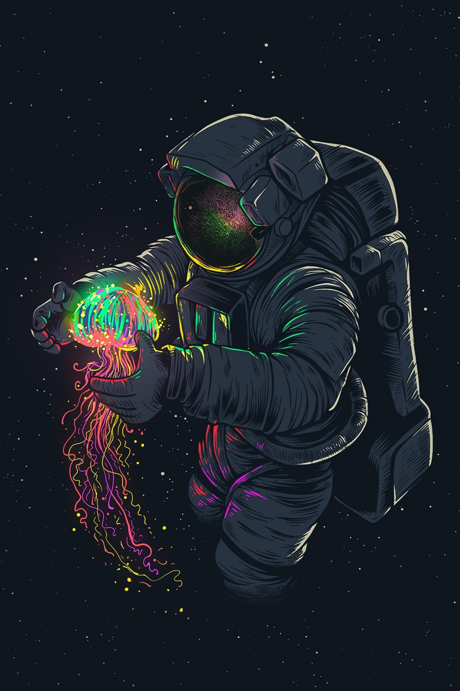
About Me
Hello!👋 I am Anshul Kaushal, a junior at Panjab University. I am deeply interested in the relationship between Artificial Intelligence and Neuroscience. I am currently educating myself, gaining more knowledge, and seeking experience in this field.
Let's engage in a conversation and collaborate if you share the same interest.😉
Interests
REINFORCEMENT LEARNING
Reinforcement learning is a dynamic machine learning approach where agents learn by interacting with an environment to maximize rewards. Unlike supervised learning, it relies on trial-and-error. The agent takes actions, receives rewards, and refines its strategy over time. The goal is to learn an optimal policy
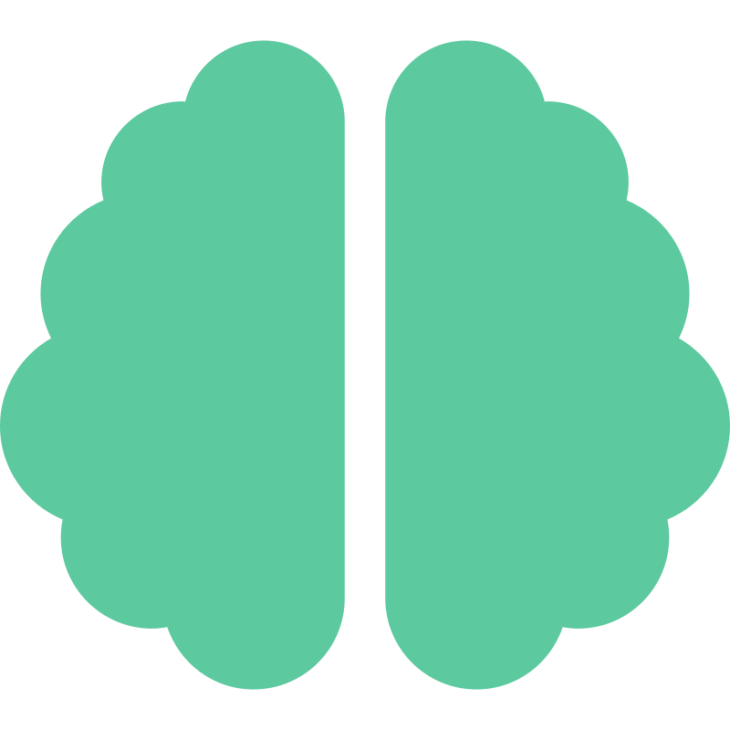
DEEP LEARNING
Deep learning is a neural network-based subset of machine learning. It leverages multiple interconnected layers to automatically learn features from data, excelling in tasks like image recognition and natural language processing. Its power lies in vast data and computational resources. It has exceptional generalizability.
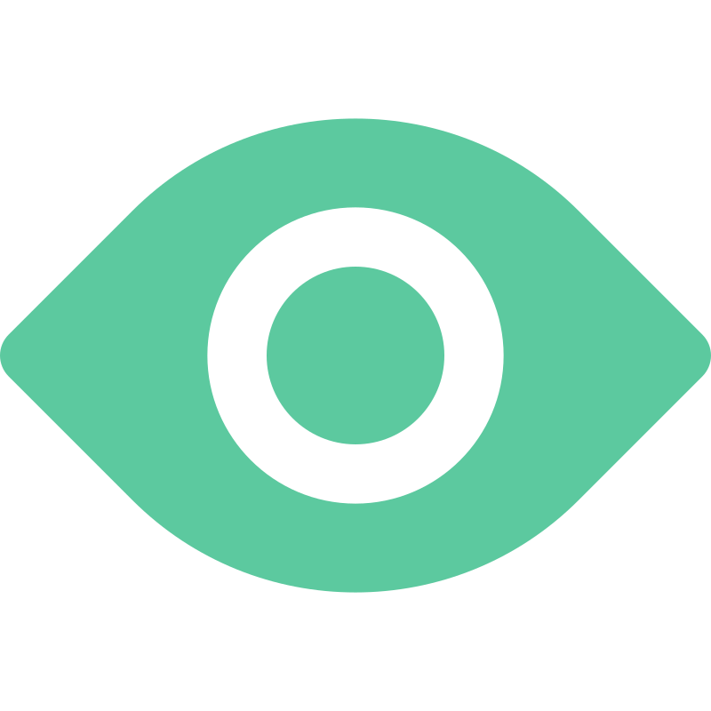
COMPUTER VISION
Computer vision involves teaching machines to interpret and understand visual information from the world. It encompasses image and video analysis, enabling applications like object detection, facial recognition, and autonomous driving. By extracting features and patterns, machines can replicate human vision.
NATURAL LANGUAGE PROCESSING
Natural Language Processing (NLP) is about enabling computers to understand, interpret, and generate human language. It encompasses tasks like language translation, sentiment analysis, and chatbots. NLP utilizes machine learning and deep learning techniques to process and comprehend text data.
Experience
IISER Bhopal
Research Intern: Deep Learning for Medical Imaging
Guide: Prof. Vinod K Kurmi
- Worked on the Mamba state‑space model for a comprehensive multi‑domain medical imaging dataset.
- Enhanced conventional CNN‑Transformer‑based image segmentation models by implementing adaptive, advanced learnable fuzzy systems.
- Achieved substantial accuracy improvements while effectively reducing FLOPs, memory consumption, and the overall parameter count for better computational efficiency
IIIT- Allahabad
Research Intern
Guide: Prof. Uma Shankar Tiwary & Prof. Mohammad Asif
- Worked on the classification of 24 distinct emotions using dense EEG data
- Gained valuable insights through explainable AI by segmenting the specific frequencies responsible for particular emotions
- Utilized an advanced genetic algorithm for effective hyperparameter tuning.
Skills
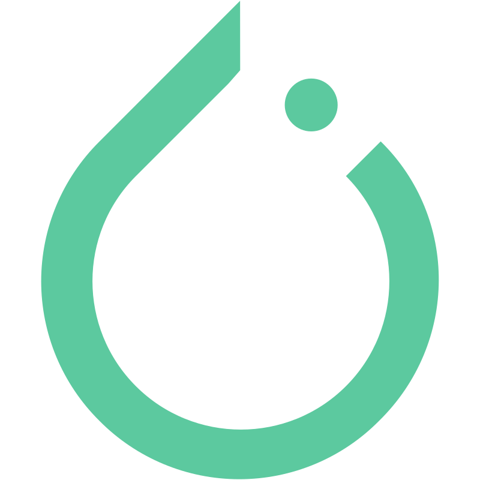
PYTORCH
TENSORFLOW
KERAS
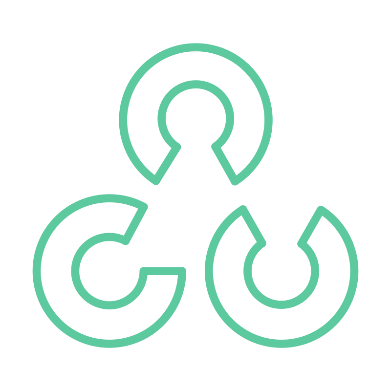
OPEN CV
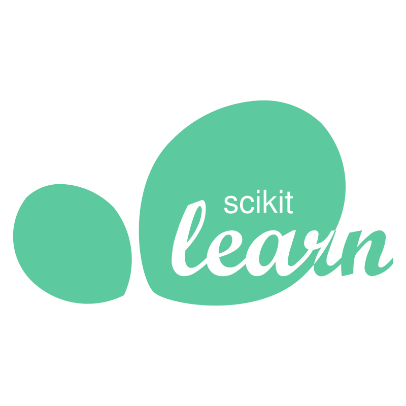
SCIKIT-LEARN
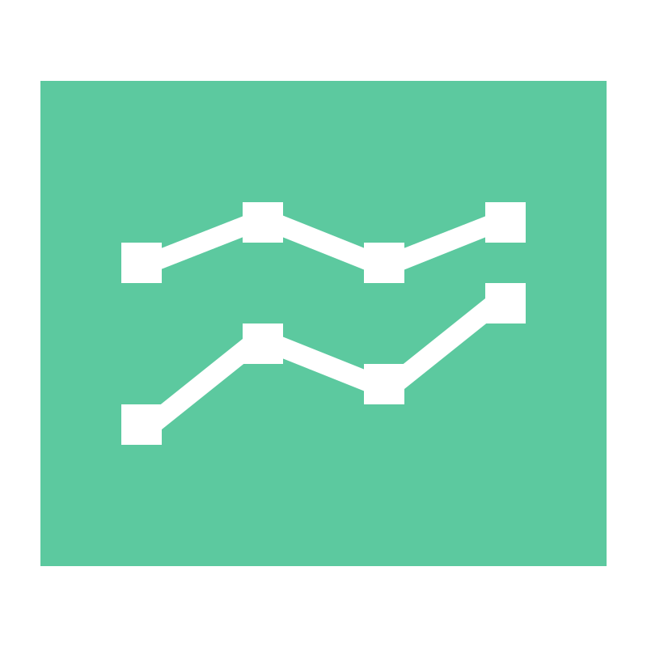
MATPLOTLIB
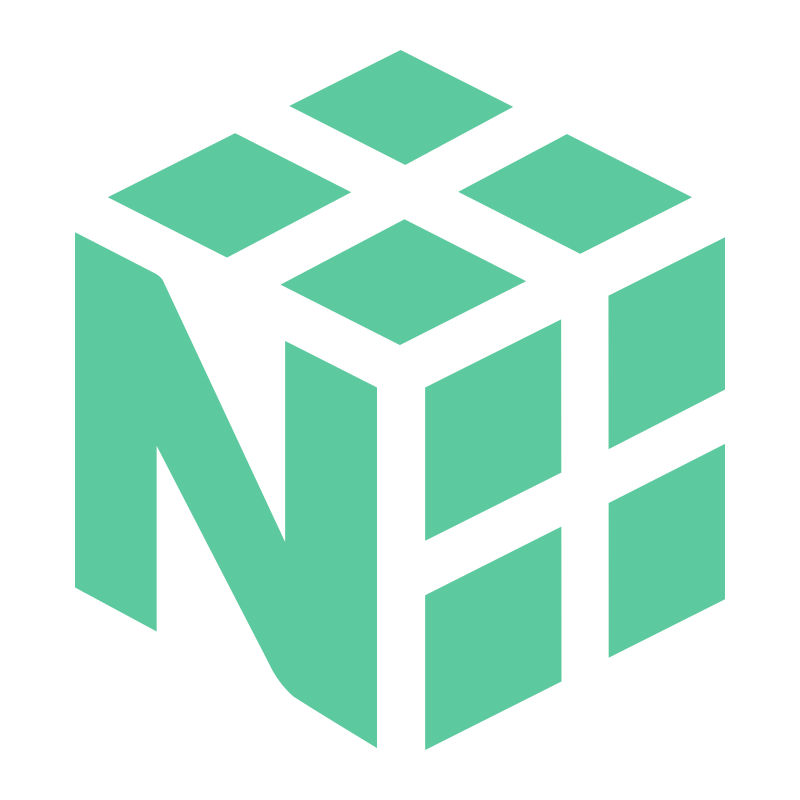
NUMPY
PANDAS
SEABORN
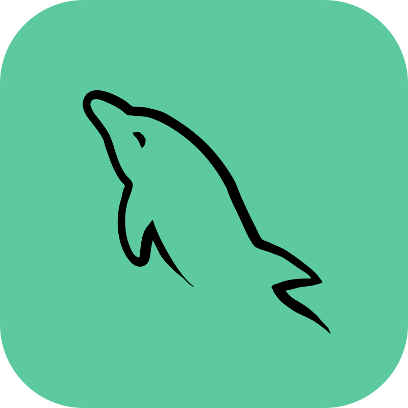
MYSQL
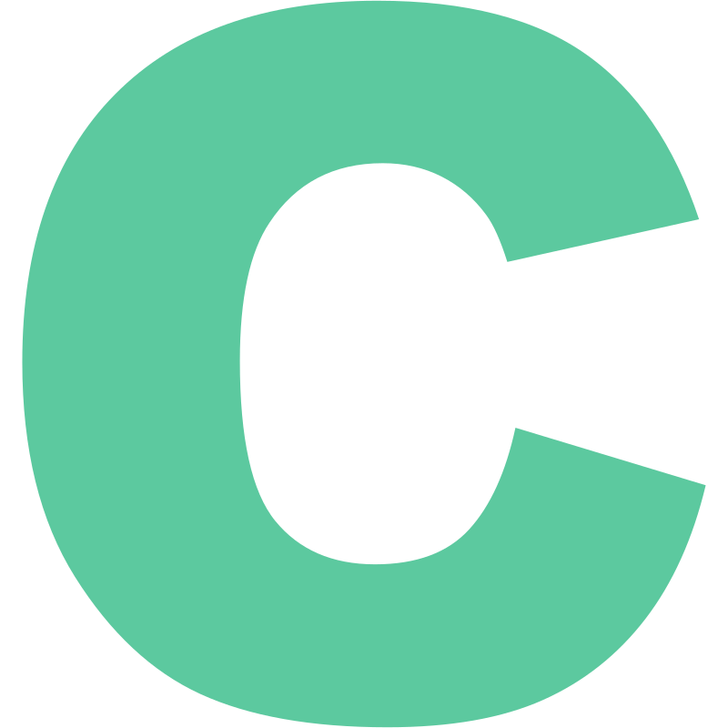
C Language
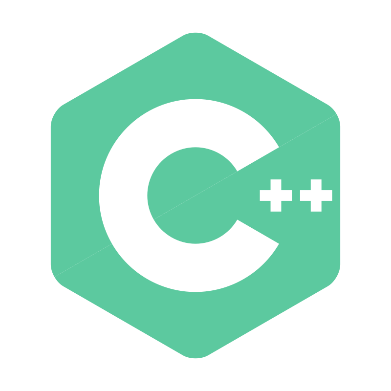
C++ Language
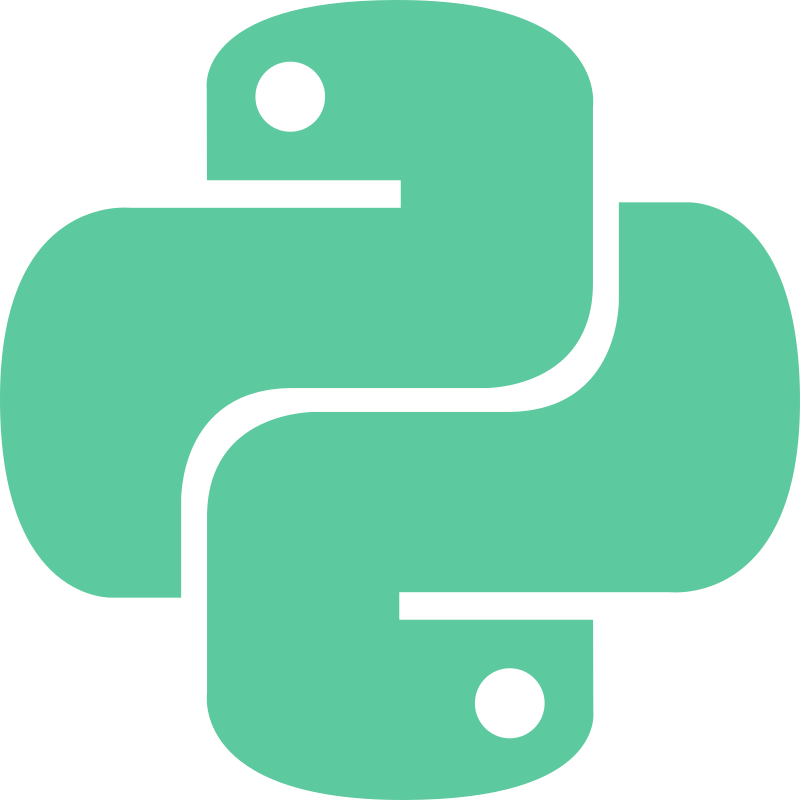
PYTHON
HTML
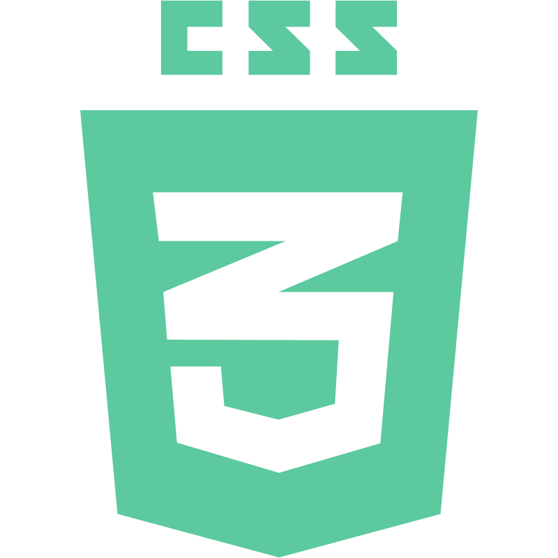
CSS
MANIM
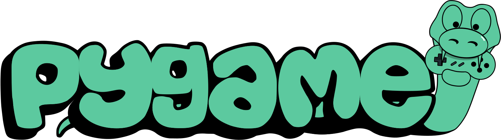
PYGAME
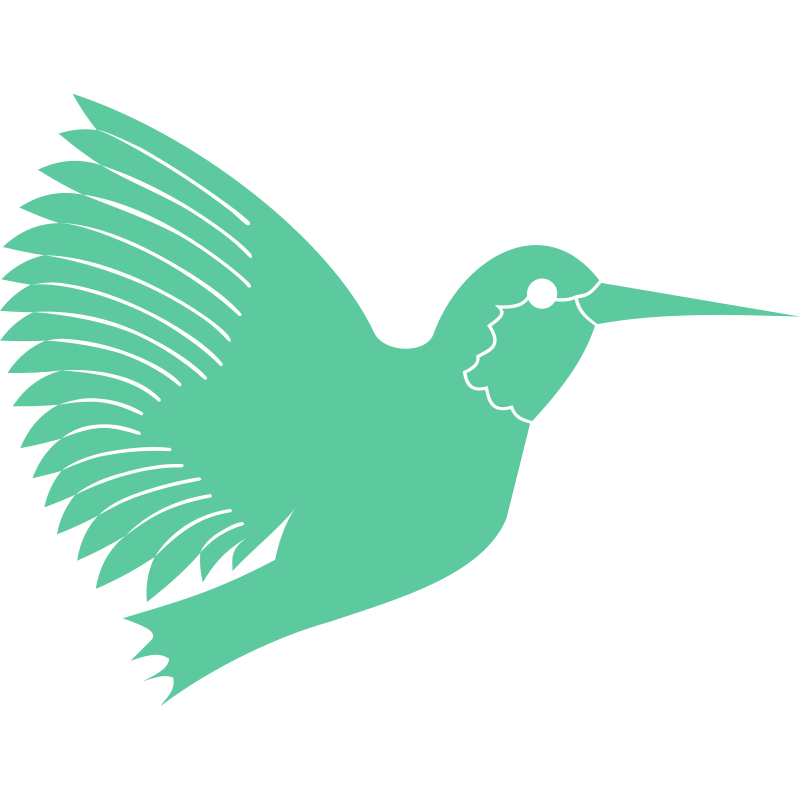
LATEX
HUGGING FACE
YOLOv8
Projects
COVID‑19 Lung Infection Segmentation
- Developed various convolutional neural network architectures, including U‑Net variants such as Trans U‑Net, Residual U‑Net, U‑Net Squared, and Recurrent U‑Net, without relying on pre‑existing models.
- Attained a high level of accuracy (Jaccard Index), surpassing 0.87, demonstrating the effectiveness of the implemented architectures in accurately segmenting the target features on COVID‑19 Lung Dataset
Rock‑Paper‑Scissor Classifier
- Explored t‑SNE (t‑distributed stochastic neighbor embedding) plots, a dimensionality reduction technique, and Grad‑Cam (Gradient‑weighted Class Activation Mapping) visualization to gain insights into the learned features of the Rock, Paper, Scissors classifier
- Leveraged a pre‑trained ResNet‑18 neural network for feature extraction, benefiting from the model’s learned representations
- Implemented data augmentation to modify the dataset enhancing the model’s ability to generalize and improve its performance on Rock, Paper, Scissors classification tasks
- Successfully achieved an accuracy of 85% on training dataset and good real‑world generalization of the model
RAG Chatbot
- It seamlessly integrates OpenAI’s GPT‑3.5 Turbo API for advanced language processing. In addition, used OpenAI’s text embeddings to serve as a robust foundation to store and retrieve data
- Using Pincone Vector Database for storing embedded information facilitates adaptive learning and precise information retrieval through dot product comparisons, ensuring the chatbot consistently delivers highly relevant responses
Spam-Ham Detector
- It seamlessly integrates OpenAI’s GPT‑3.5 Turbo API for advanced language processing. In addition, used OpenAI’s text embeddings to serve as a robust foundation to store and retrieve data
- Using Pincone Vector Database for storing embedded information facilitates adaptive learning and precise information retrieval through dot product comparisons, ensuring the chatbot consistently delivers highly relevant responses
Connect
Let's connect and build something truly incredible!🤯